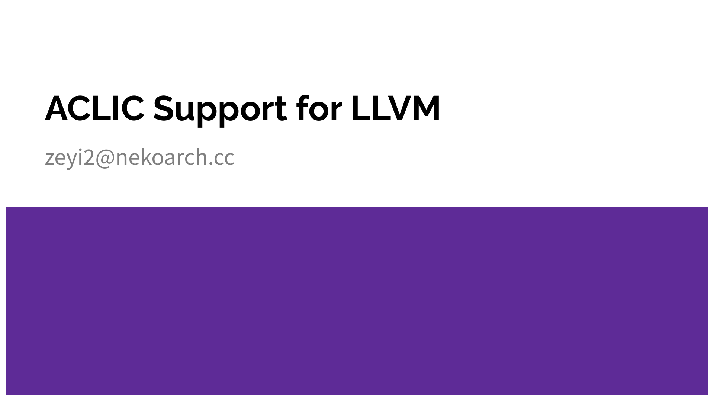

大家好，今天我想聊一聊 LLVM 对 ACLIC 的支持。ACLIC 是 RISC-V fast interrupt 规范里面向微控制器的快速中断方案，目标是让中断响应更快、嵌套更方便、上下文保存更省事。
这次分享大概分三部分。第一部分先“考古”，看看 ACLIC 想解决什么问题，它的前身 SiFive CLIC 又是怎么来的。第二部分看 LLVM 上游对 SiFive CLIC 的支持历程，以及当时合并的版本里有哪些问题。第三部分讲新的 ACLIC 支持做到了哪一步，以及目前正在 review 的 frame pointer 支持。